03 / Sophia Lin
Piano.
Selected performances. Solo and with orchestra.
I studied with Dr. Marjorie Lee and performed chamber music through the National Symphony Orchestra Youth Fellowship. These recordings span solo recital and concerto performance. Biography ↗
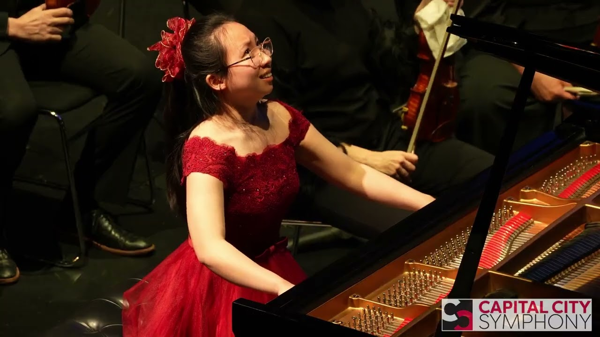
Piano Concerto No. 20 in D minor · K. 466 · Capital City Symphony · 2025
MozartConcerto No. 20
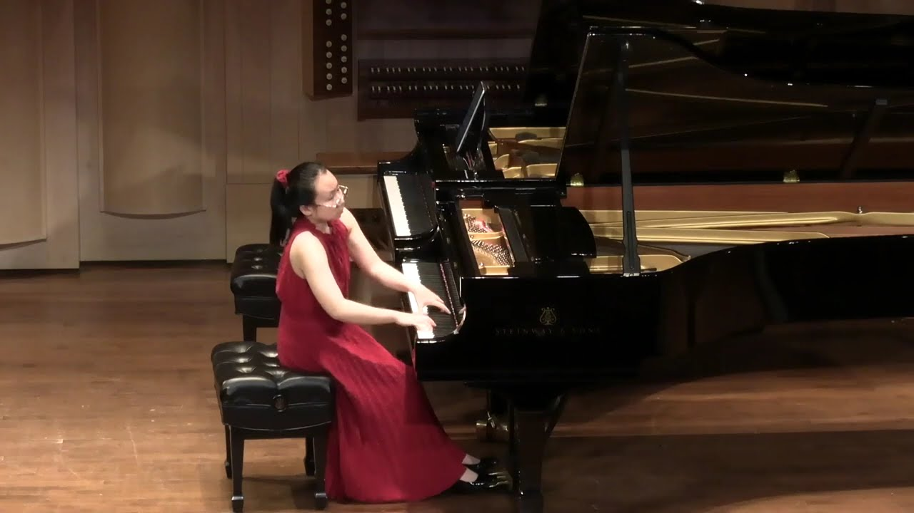
Les jeux d'eau à la Villa d'Este · Southeastern Piano Festival · 2024
Lisztat SEPF
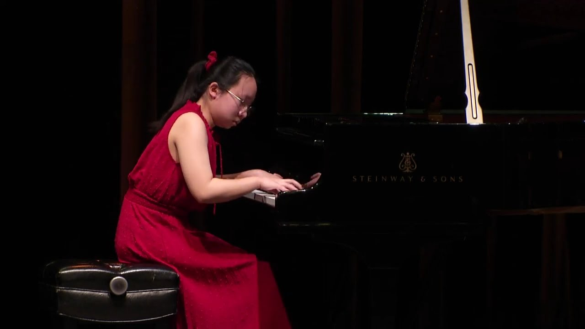
Les jeux d'eau à la Villa d'Este · Kennedy Center · 2024
Lisztat the Kennedy Center
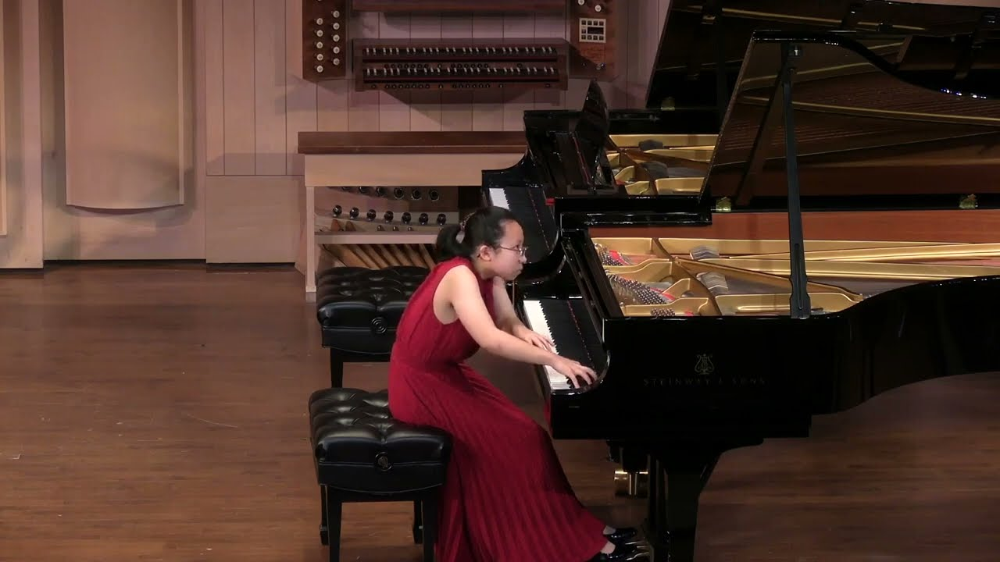
Concert Paraphrase on Powder Her Face · Southeastern Piano Festival · 2023
Adèsat SEPF
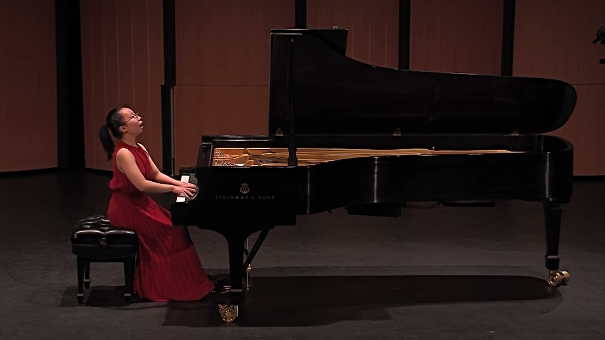
Solo Recital · MostArts Festival · 2023
Adès
Liszt
Chopin
Beethoven
Liszt
Chopin
Beethoven
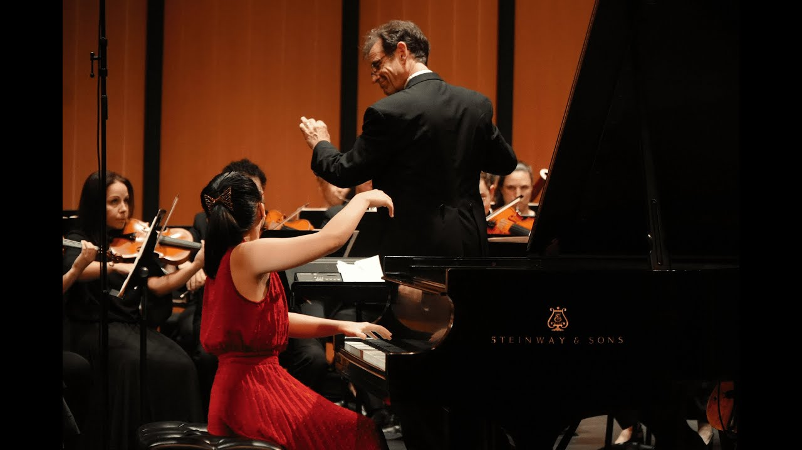
Piano Concerto No. 17 in G major · K. 453 · MostArts Festival · 2023
MozartConcerto No. 17
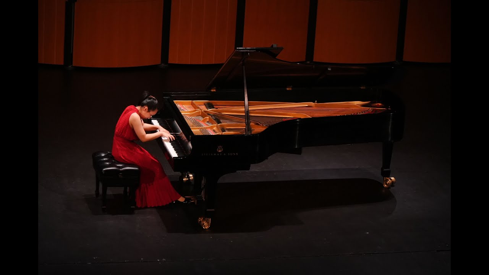
Concert Paraphrase on Powder Her Face · MostArts Festival · 2023
Adèsat MostArts
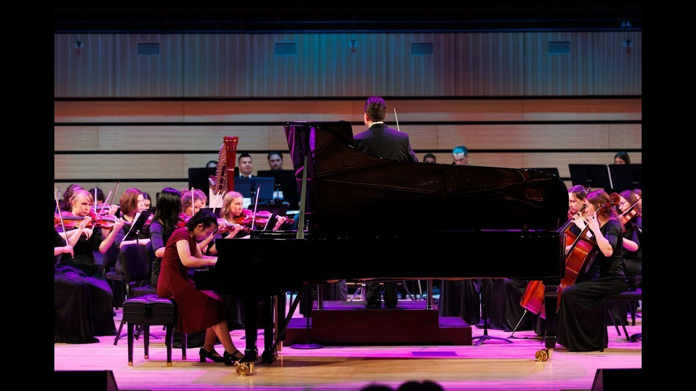
Piano Concerto No. 1 · Op. 25 · VMTA Conference · 2022
MendelssohnConcerto No. 1
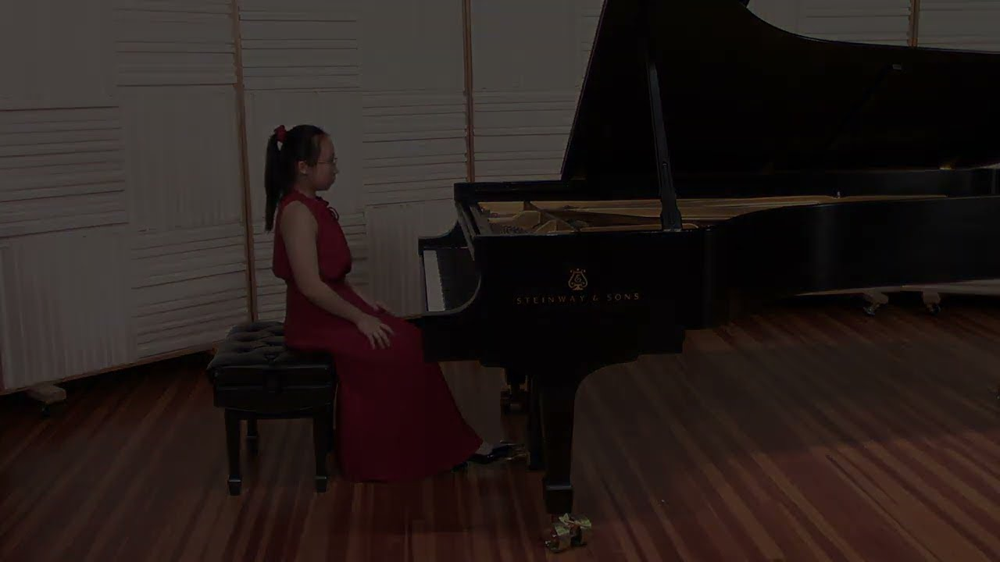
Sonata No. 7 in D major · Op. 10 No. 3
BeethovenI. Presto
Sonata No. 7 in D major · Op. 10 No. 3
BeethovenII. Largo
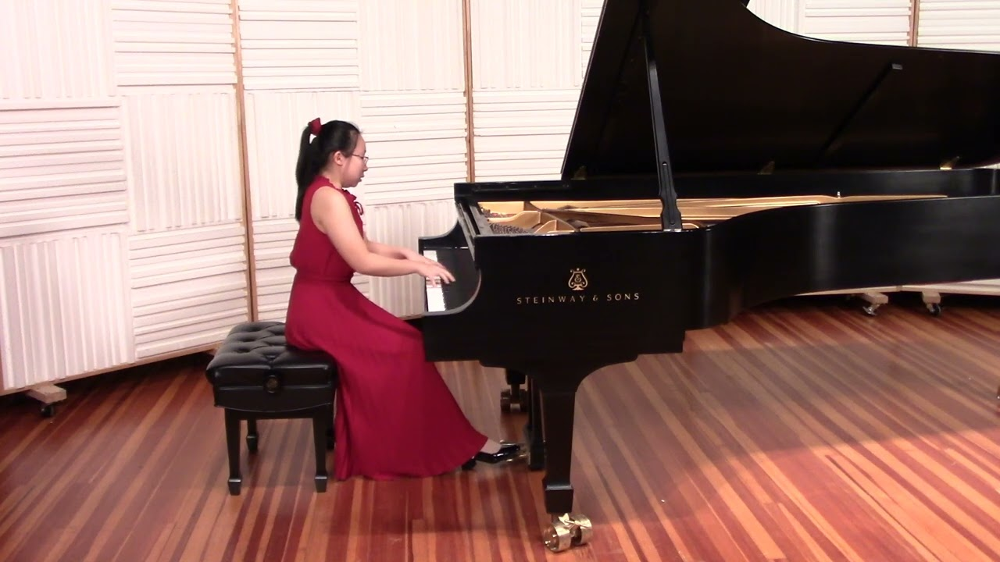
Sonata No. 7 in D major · Op. 10 No. 3
BeethovenIII. Menuetto
Sonata No. 7 in D major · Op. 10 No. 3
BeethovenIV. Rondo
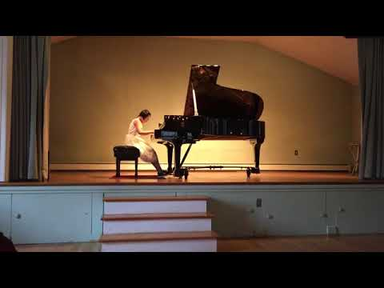
Le Tombeau de Couperin · I. Prélude
Ravel
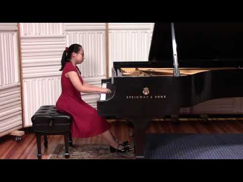
Pagodes · from Estampes
DebussyPagodes